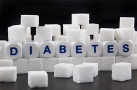

Analyzed FinTechLend's business performance and customer feedback using data analytics, statistical methods and
Power BI to uncover growth opportunities, optimize lending channels, and enhance customer retention.


Analyzed JustDrinks Ltd.'s sales data to resolve inconsistencies, uncover revenue trends, and identify top-performing regions. Leveraged data modeling, DAX calculations,
and Power BI visualizations to provide actionable insights and optimize business performance.

This project focuses on predicting customer churn for a leading electricity provider serving the SME (Small and Medium Enterprise) segment.
Using machine learning, feature engineering, data analysis, and Power BI visualizations, the goal was to forecast which customers were most likely to churn and recommend strategic interventions to reduce churn rates and protect revenue.

The project’s goal is to conduct customer segmentation analysis to identify key customer groups, predict future purchasing behaviours,
and devise personalized customer experiences to improve customer engagement and retention rates.

I developed a machine learning model to predict the likelihood of diabetes in patients based on medical features such as glucose level, BMI, and age.
The project involved data preprocessing, feature selection, and model evaluation using metrics like accuracy and precision. Among the algorithms tested,
Random Forest achieved the highest accuracy, offering a reliable approach for early detection.

I built a machine learning model to predict the presence of heart disease in patients using key health indicators such as cholesterol level,
resting blood pressure and fasting blood sugar (FBS). The project included data cleaning, exploratory analysis, feature selection, and model evaluation
using metrics like accuracy, recall, and F1-score. KNearest Neighbors (KNN) emerged as the top-performing model,
providing a robust tool for supporting early diagnosis and preventative care in healthcare settings.